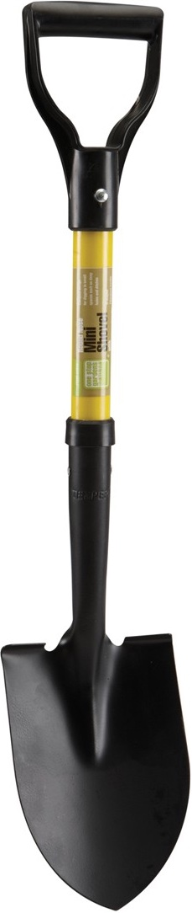

Intro to jspm
jspm
Write tomorrow's JavaScript… today
Video while you grab lunch
zAgenda
- What is jspm?
- How does it fit into the ecosystem?
- Why is it good?
- Demo
Q: What is jspm?
Simple answer: JavaScript Package Manager
Thanks for coming!
Questions?
- A CLI for installing JS libraries
- It provides ES6 Modules and Promises
- It provides an ES6 Transpiler
How this works today with RequireJS
- Download and unzip moment-2.9.0.zip
- Read README and figure out which files to include
- Add to codebase in semi-random directory
- Update Require's config.js and map 'moment' to this particular JS file
- Possibly update build script
- Start using in your code
- Rebuild code / restart server
- Refresh browser
How this works today with jspm
$ jspm install moment@2.9.0
import moment from 'moment';
// refresh browser
jspm standardizes:
- Where to store libraries (
jspm_packages)
- How to map common names to a specific artificat
- How to load a library as a JS Module
Without re-inventing the eco-system...
The CLI re-uses npm and github as repositories.
It maintains a lightweight mapping of common names to repository names.
It is easy possible to install a JS library that is not in the system.

Dig deeper - The jspm Command Line Interface is provided by jspm-cli.
- A CLI for installing JS libraries
- It provides ES6 Modules and Promises
- It provides an ES6 Transpiler
What is jspm :: ES6 Modules
Wait, import moment from 'moment'; huh?
jsmodules.io - Replaces AMD standard which RequireJS provides,
with the web standards System way of doing things.
What is jspm :: ES6 Modules
The other two popular module formats are:
- CommonJS module format (NodeJS)
- Global - the non-module, module format
jspm is a universal module loader, so you can import Global, AMD, CommonJS or System formats.
- A CLI for installing JS libraries
- It provides ES6 Modules and Promises
- It provides an ES6 Transpiler
What is jspm :: ES6 Transpiler
jspm is bundled with Google's Traceur.js, but it is trival to use Babel instead.
What is jspm :: ES6 Transpiler
Traceur is a Transpiler which takes ES6 JavaScript and compiles
into ECMAScript 5.1, which runs on all modern browsers.
What is jspm :: ES6 Transpiler
Example ES6 code
el.addEventListener('click', e => {
e.preventDefault();
var splatParams =
arr.map(customer => return customer.id);
processCustomers(...splatParams);
}, false);
What is jspm :: ES6 Transpiler
ES6 is really it's own brownbag topic
What is jspm :: ES6 Transpiler
But the important bits, is that jspm provides this infrastructure as a polyfill at runtime,
and as an optimized build for production deployment.
What is jspm :: ES6 Transpiler
Development
<script src="jspm_packages/system.js"></script>
<script src="config.js"></script>
<script>
System.import('pro_detail');
</script>
Production
<script src="pro_detail.min.js"></script>
This minified file can optimize away the ES6 niceities to be maximally lean.
What is jspm :: ES6 Transpiler
Dig deeper
Agenda
- What is jspm?
- How does it fit into the ecosystem?
- Why is it good?
- Demo
What is jspm :: Ecosystem
This all looks familiar, I already get this with React (and/or Browserify / Webpack)
Congrats, there are (too?) many ways to live in the future right now.
What is jspm :: Ecosystem
Although somewhat confusing, one already gets the benefits of being able to use a limited amount of ES6 syntax in one's .jsx.
What is jspm :: Ecosystem
Deployed Technologies
| Client JS Modules |
SystemJS |
CommonJS then browserify / webpack (?) |
AMD (RequireJS) |
Global Scope |
ES6 Module Loader, YUI |
| Client ES6 Transpiler |
Babel |
JSX (limited) |
None |
ES 5.1 Only |
Traceur |
| Server-side ES6 |
None |
JSX (limited) |
N/A |
N/A |
Native (--harmony, io.js) |
| Client Package Manager |
jspm |
npm + browserify / Manual (???) |
None |
None |
bower, pacman, jam, Duo, ... |
| Client Asset Pipeline |
jspm bundle |
webpack |
Maven, requirejs, uglify, etc |
None |
grunt / gulp / yoeman / uglify, .... |
Agenda
- What is jspm?
- How does it fit into the ecosystem?
- Why is it good?
- Demo
- Fast, unified development flow (no build step)
- Automates metadata bookkeeping
Simple Reasonable execution model- Encourages reusable components
Agenda
- What is jspm?
- How does it fit into the ecosystem?
- Why is it good?
- Demo
We've got ugly dates on a page, moment.js to the rescue.